MNESIS : a notebook that runs all of them¶
[1]:
# %pip install -U -r requirements.txt
[2]:
from mnesis_boilerplate import datetime
from mnesis_boilerplate import pprint
datetag = '2026-09-07'
Using device: mps
[3]:
print(f"⏱️ START: {datetime.datetime.now().strftime('%Y-%m-%d %H:%M:%S')}")
pprint("🚀 Importing: mnesis_boilerplate.py")
print(f"✅ END: {datetime.datetime.now().strftime('%Y-%m-%d %H:%M:%S')}")
⏱️ START: 2026-09-13 14:33:20
==================================
🚀 Importing: mnesis_boilerplate.py
==================================
✅ END: 2026-09-13 14:33:20
[4]:
pprint("🚀 Running: 10_MNESIS_generative-model.ipynb")
print(f"⏱️ START: {datetime.datetime.now().strftime('%Y-%m-%d %H:%M:%S')}")
%run 10_MNESIS_generative-model.ipynb
print(f"✅ END: {datetime.datetime.now().strftime('%Y-%m-%d %H:%M:%S')}")
===========================================
🚀 Running: 10_MNESIS_generative-model.ipynb
===========================================
⏱️ START: 2026-09-13 14:33:20
/Users/laurent/sdrive_cnrs/hot_from_git/TemporallyHeterogeneousConnections/MNESIS/.venv/lib/python3.12/site-packages/snntorch/spikeplot.py:120: UserWarning: You passed an edgecolor/edgecolors ('none') for an unfilled marker ('x'). Matplotlib is ignoring the edgecolor in favor of the facecolor. This behavior may change in the future.
return ax.scatter(*torch.where(data.cpu()), **kwargs)
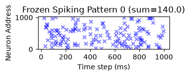
Description: Stochastic spike pattern generator
Target pattern generated with shape torch.Size([16, 1024, 1000]) and mean 1.579e-04
Target pattern generated with shape torch.Size([16, 1024, 1000]) and mean 1.579e-04
Flipping 1639074.0 bits out of 16384000 (p_flip=0.1, flip seed=10831960481341746692), 1.579e-04 -> 1.002e-01
Flipping 1638791.0 bits out of 16384000 (p_flip=0.1, flip seed=12069954148654773892), 1.579e-04 -> 1.002e-01
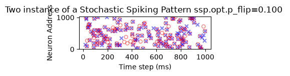
✅ END: 2026-09-13 14:33:21
[5]:
pprint("🚀 Running: 11_MNESIS_learn-synthetic.ipynb")
print(f"⏱️ START: {datetime.datetime.now().strftime('%Y-%m-%d %H:%M:%S')}")
%run 11_MNESIS_learn-synthetic.ipynb
print(f"✅ END: {datetime.datetime.now().strftime('%Y-%m-%d %H:%M:%S')}")
==========================================
🚀 Running: 11_MNESIS_learn-synthetic.ipynb
==========================================
⏱️ START: 2026-09-13 14:33:21
Spikes in one target 163.8, in a SM window 6.7
for a value opt.lif_beta=0.7, the time constant is 2.8 steps
Model weights loaded from ../cached_data/2026-09-07_init.pth
precision = 0.901 recall = 0.809 f1_score = 0.853
Saving as ../figures/pattern.pdf
Saving as ../figures/pattern.png
Saving as ../figures/pattern.svg
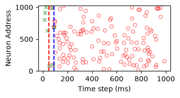
Saving as ../figures/target_init.pdf
Saving as ../figures/target_init.png
Saving as ../figures/target_init.svg
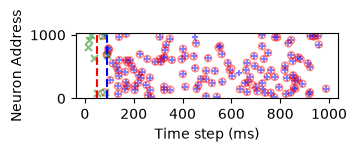
Model weights loaded from ../cached_data/2026-09-07_vanilla.pth
precision = 0.901 recall = 0.809 f1_score = 0.853
Saving as ../figures/target.pdf
Saving as ../figures/target.png
Saving as ../figures/target.svg
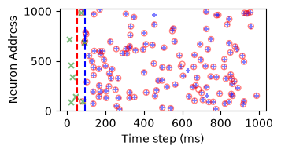
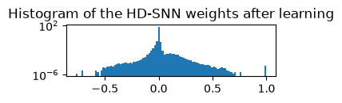
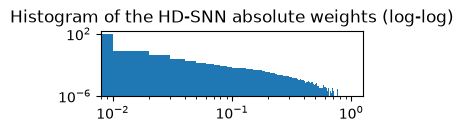
✅ END: 2026-09-13 14:33:28
[6]:
pprint("🚀 Running: 13_MNESIS_testing-inference.ipynb")
print(f"⏱️ START: {datetime.datetime.now().strftime('%Y-%m-%d %H:%M:%S')}")
%run 13_MNESIS_testing-inference.ipynb
print(f"✅ END: {datetime.datetime.now().strftime('%Y-%m-%d %H:%M:%S')}")
============================================
🚀 Running: 13_MNESIS_testing-inference.ipynb
============================================
⏱️ START: 2026-09-13 14:33:28
Model weights loaded from ../cached_data/2026-09-07_vanilla.pth
Model weights loaded from ../cached_data/2026-09-07_vanilla.pth - the pattern generator is the Stochastic spike pattern generator
Score weights loaded from ../cached_data/2026-09-07_score.npy
Saving as ../figures/retrieval.pdf
Saving as ../figures/retrieval.png
Saving as ../figures/retrieval.svg
/private/tmp/ipykernel_39797/220220000.py:8: UserWarning: No artists with labels found to put in legend. Note that artists whose label start with an underscore are ignored when legend() is called with no argument.
ax.legend(loc='lower right')
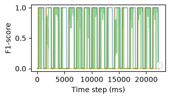
✅ END: 2026-09-13 14:33:28
[7]:
pprint("🚀 Running: 14_MNESIS_testing-noise.ipynb")
print(f"⏱️ START: {datetime.datetime.now().strftime('%Y-%m-%d %H:%M:%S')}")
%run 14_MNESIS_testing-noise.ipynb
print(f"✅ END: {datetime.datetime.now().strftime('%Y-%m-%d %H:%M:%S')}")
========================================
🚀 Running: 14_MNESIS_testing-noise.ipynb
========================================
⏱️ START: 2026-09-13 14:33:28
Model weights loaded from ../cached_data/2026-09-07_vanilla.pth
Model weights loaded from ../cached_data/2026-09-07_vanilla.pth
precision = 0.897 recall = 0.806 f1_score = 0.849
Saving as ../figures/p_flip_target.pdf
Saving as ../figures/p_flip_target.png
Saving as ../figures/p_flip_target.svg
Score weights loaded from ../cached_data/2026-09-07_noise.npz
Saving as ../figures/p_flip_score.pdf
Saving as ../figures/p_flip_score.png
Saving as ../figures/p_flip_score.svg
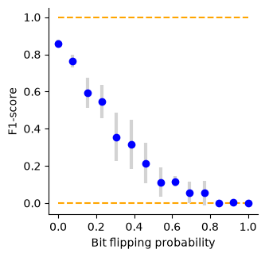
Score file is locked: ../cached_data/2026-09-07_noise_retrain.lock, passing.
Retrain scores loaded from ../cached_data/2026-09-07_noise_retrain.npz
✅ END: 2026-09-13 14:33:30
[8]:
pprint("🚀 Running: 15_MNESIS_testing-trigger-duration.ipynb")
print(f"⏱️ START: {datetime.datetime.now().strftime('%Y-%m-%d %H:%M:%S')}")
%run 15_MNESIS_testing-trigger-duration.ipynb
print(f"✅ END: {datetime.datetime.now().strftime('%Y-%m-%d %H:%M:%S')}")
===================================================
🚀 Running: 15_MNESIS_testing-trigger-duration.ipynb
===================================================
⏱️ START: 2026-09-13 14:33:30
Model weights loaded from ../cached_data/2026-09-07_vanilla.pth
precision = 0.715 recall = 0.204 f1_score = 0.318
Saving as ../figures/trigger_time.pdf
Saving as ../figures/trigger_time.png
Saving as ../figures/trigger_time.svg
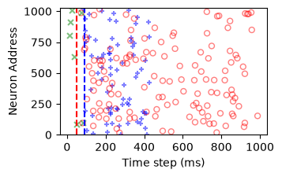
Score weights loaded from ../cached_data/2026-09-07_trigger_time.npz
Saving as ../figures/trigger_time_score.pdf
Saving as ../figures/trigger_time_score.png
Saving as ../figures/trigger_time_score.svg
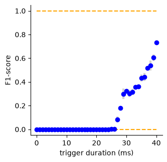
✅ END: 2026-09-13 14:33:33
[9]:
pprint("🚀 Running: 16_MNESIS_testing-trigger-fraction.ipynb")
print(f"⏱️ START: {datetime.datetime.now().strftime('%Y-%m-%d %H:%M:%S')}")
%run 16_MNESIS_testing-trigger-fraction.ipynb
print(f"✅ END: {datetime.datetime.now().strftime('%Y-%m-%d %H:%M:%S')}")
===================================================
🚀 Running: 16_MNESIS_testing-trigger-fraction.ipynb
===================================================
⏱️ START: 2026-09-13 14:33:33
Model weights loaded from ../cached_data/2026-09-07_vanilla.pth
precision = 0.893 recall = 0.695 f1_score = 0.782
Saving as ../figures/fraction_target.pdf
Saving as ../figures/fraction_target.png
Saving as ../figures/fraction_target.svg
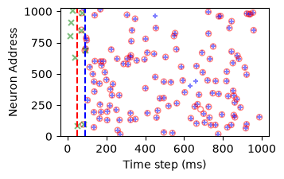
Score weights loaded from ../cached_data/2026-09-07_N_neurons.npz
Saving as ../figures/fraction_target_score.pdf
Saving as ../figures/fraction_target_score.png
Saving as ../figures/fraction_target_score.svg
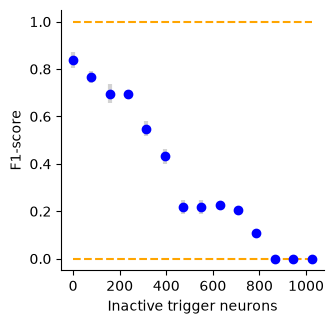
✅ END: 2026-09-13 14:33:36
[10]:
pprint("🚀 Running: 20_MNESIS_scanning-parameters.ipynb")
print(f"⏱️ START: {datetime.datetime.now().strftime('%Y-%m-%d %H:%M:%S')}")
%run 20_MNESIS_scanning-parameters.ipynb
print(f"✅ END: {datetime.datetime.now().strftime('%Y-%m-%d %H:%M:%S')}")
==============================================
🚀 Running: 20_MNESIS_scanning-parameters.ipynb
==============================================
⏱️ START: 2026-09-13 14:33:36
Spikes in one target 163.8, in a SM window 6.7
for a value opt.lif_beta=0.7, the time constant is 2.8 steps
================================================================================
Scanning core network parameters to evaluate learning performance and robustness
================================================================================
--------------------------------------------------
scanning key='N_pattern'
--------------------------------------------------
--------------------------------------------------
scanning key='N_time'
--------------------------------------------------
---------------------------------------------------------------------------
KeyboardInterrupt Traceback (most recent call last)
File /private/tmp/ipykernel_39797/2252423994.py:70
66 new_opt = Params(**new_dict)
67 new_hd = HD_SNN(new_opt, StochasticSpikingPattern())
68
69 new_hd.update_weight()
---> 70 new_hd.learn_model(verbose=False)
71
72 try:
73 with torch.no_grad():
File ~/sdrive_cnrs/hot_from_git/TemporallyHeterogeneousConnections/MNESIS/src/mnesis_chains.py:338, in HD_SNN.learn_model(self, verbose)
335 # the loss is computed only on the output spikes that correspond to the target pattern, i.e. after the pre-time spontaneous activity and after the trigger window
336 loss_train = loss_fn(output_spikes[:, :, (self.opt.N_pretime+self.opt.num_delay):(self.opt.N_time+self.opt.N_pretime)],
337 target[:, :, self.opt.num_delay:])
--> 338 loss_train.backward()
339 optimizer.step()
340 scheduler.step()
File ~/sdrive_cnrs/hot_from_git/TemporallyHeterogeneousConnections/MNESIS/.venv/lib/python3.12/site-packages/torch/_tensor.py:623, in Tensor.backward(self, gradient, retain_graph, create_graph, inputs)
613 if has_torch_function_unary(self):
614 return handle_torch_function(
615 Tensor.backward,
616 (self,),
(...) 621 inputs=inputs,
622 )
--> 623 torch.autograd.backward(
624 self, gradient, retain_graph, create_graph, inputs=inputs
625 )
File ~/sdrive_cnrs/hot_from_git/TemporallyHeterogeneousConnections/MNESIS/.venv/lib/python3.12/site-packages/torch/autograd/__init__.py:395, in backward(tensors, grad_tensors, retain_graph, create_graph, grad_variables, inputs)
390 retain_graph = create_graph
392 # The reason we repeat the same comment below is that
393 # some Python versions print out the first line of a multi-line function
394 # calls in the traceback and some print out the last line
--> 395 _engine_run_backward(
396 tensors,
397 grad_tensors_,
398 retain_graph,
399 create_graph,
400 inputs_tuple,
401 allow_unreachable=True,
402 accumulate_grad=True,
403 )
File ~/sdrive_cnrs/hot_from_git/TemporallyHeterogeneousConnections/MNESIS/.venv/lib/python3.12/site-packages/torch/autograd/graph.py:979, in _engine_run_backward(t_outputs, *args, **kwargs)
976 torch._C._stash_obj_in_tls("context", contextvars.copy_context())
978 try:
--> 979 return Variable._execution_engine.run_backward( # Calls into the C++ engine to run the backward pass
980 t_outputs, *args, **kwargs
981 ) # Calls into the C++ engine to run the backward pass
982 finally:
983 if attach_logging_hooks:
KeyboardInterrupt:
---------------------------------------------------------------------------
KeyboardInterrupt Traceback (most recent call last)
Cell In[10], line 3
1 pprint("🚀 Running: 20_MNESIS_scanning-parameters.ipynb")
2 print(f"⏱️ START: {datetime.datetime.now().strftime('%Y-%m-%d %H:%M:%S')}")
----> 3 get_ipython().run_line_magic('run', '20_MNESIS_scanning-parameters.ipynb')
4 print(f"✅ END: {datetime.datetime.now().strftime('%Y-%m-%d %H:%M:%S')}")
File /private/tmp/ipykernel_39797/2252423994.py:70
66 new_opt = Params(**new_dict)
67 new_hd = HD_SNN(new_opt, StochasticSpikingPattern())
68
69 new_hd.update_weight()
---> 70 new_hd.learn_model(verbose=False)
71
72 try:
73 with torch.no_grad():
File ~/sdrive_cnrs/hot_from_git/TemporallyHeterogeneousConnections/MNESIS/src/mnesis_chains.py:338, in HD_SNN.learn_model(self, verbose)
335 # the loss is computed only on the output spikes that correspond to the target pattern, i.e. after the pre-time spontaneous activity and after the trigger window
336 loss_train = loss_fn(output_spikes[:, :, (self.opt.N_pretime+self.opt.num_delay):(self.opt.N_time+self.opt.N_pretime)],
337 target[:, :, self.opt.num_delay:])
--> 338 loss_train.backward()
339 optimizer.step()
340 scheduler.step()
File ~/sdrive_cnrs/hot_from_git/TemporallyHeterogeneousConnections/MNESIS/.venv/lib/python3.12/site-packages/torch/_tensor.py:623, in Tensor.backward(self, gradient, retain_graph, create_graph, inputs)
613 if has_torch_function_unary(self):
614 return handle_torch_function(
615 Tensor.backward,
616 (self,),
(...) 621 inputs=inputs,
622 )
--> 623 torch.autograd.backward(
624 self, gradient, retain_graph, create_graph, inputs=inputs
625 )
File ~/sdrive_cnrs/hot_from_git/TemporallyHeterogeneousConnections/MNESIS/.venv/lib/python3.12/site-packages/torch/autograd/__init__.py:395, in backward(tensors, grad_tensors, retain_graph, create_graph, grad_variables, inputs)
390 retain_graph = create_graph
392 # The reason we repeat the same comment below is that
393 # some Python versions print out the first line of a multi-line function
394 # calls in the traceback and some print out the last line
--> 395 _engine_run_backward(
396 tensors,
397 grad_tensors_,
398 retain_graph,
399 create_graph,
400 inputs_tuple,
401 allow_unreachable=True,
402 accumulate_grad=True,
403 )
File ~/sdrive_cnrs/hot_from_git/TemporallyHeterogeneousConnections/MNESIS/.venv/lib/python3.12/site-packages/torch/autograd/graph.py:979, in _engine_run_backward(t_outputs, *args, **kwargs)
976 torch._C._stash_obj_in_tls("context", contextvars.copy_context())
978 try:
--> 979 return Variable._execution_engine.run_backward( # Calls into the C++ engine to run the backward pass
980 t_outputs, *args, **kwargs
981 ) # Calls into the C++ engine to run the backward pass
982 finally:
983 if attach_logging_hooks:
KeyboardInterrupt:
[ ]:
pprint("🚀 Running: 25_MNESIS_optuna.ipynb")
print(f"⏱️ START: {datetime.datetime.now().strftime('%Y-%m-%d %H:%M:%S')}")
%run 25_MNESIS_optuna.ipynb
print(f"✅ END: {datetime.datetime.now().strftime('%Y-%m-%d %H:%M:%S')}")
[ ]:
pprint("🚀 Running: 30_MNESIS_learn-periodic.ipynb")
print(f"⏱️ START: {datetime.datetime.now().strftime('%Y-%m-%d %H:%M:%S')}")
%run 30_MNESIS_learn-periodic.ipynb
print(f"✅ END: {datetime.datetime.now().strftime('%Y-%m-%d %H:%M:%S')}")
[ ]:
pprint("🚀 Running: 32_MNESIS_learn-travelling-waves.ipynb")
print(f"⏱️ START: {datetime.datetime.now().strftime('%Y-%m-%d %H:%M:%S')}")
%run 32_MNESIS_learn-travelling-waves.ipynb
print(f"✅ END: {datetime.datetime.now().strftime('%Y-%m-%d %H:%M:%S')}")
[ ]:
pprint("🚀 Running: 34_MNESIS_learn-Lorenz-attractor.ipynb")
print(f"⏱️ START: {datetime.datetime.now().strftime('%Y-%m-%d %H:%M:%S')}")
%run 34_MNESIS_learn-Lorenz-attractor.ipynb
print(f"✅ END: {datetime.datetime.now().strftime('%Y-%m-%d %H:%M:%S')}")
[ ]:
pprint("🚀 Running: 36_MNESIS_learn-text.ipynb")
print(f"⏱️ START: {datetime.datetime.now().strftime('%Y-%m-%d %H:%M:%S')}")
%run 36_MNESIS_learn-text.ipynb
print(f"✅ END: {datetime.datetime.now().strftime('%Y-%m-%d %H:%M:%S')}")
[ ]:
# pprint("🚀 Running: 40_MNESIS_learn-SHD.ipynb")
# print(f"⏱️ START: {datetime.datetime.now().strftime('%Y-%m-%d %H:%M:%S')}")
# %run 40_MNESIS_learn-SHD.ipynb
# print(f"✅ END: {datetime.datetime.now().strftime('%Y-%m-%d %H:%M:%S')}")
[ ]:
pprint("✅ All MNESIS notebooks executed successfully!")